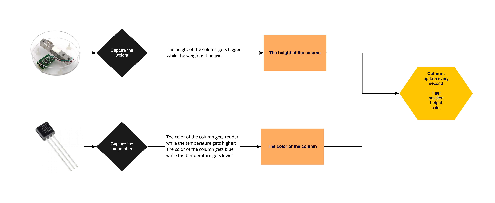

When is the best time for tea?
Background
I have not been a water drinker since I was a child, but I have recently developed a hobby of drinking tea. Making tea often requires boiling water, so I have to wait a while for the tea to cool to the right temperature before I can drink it. But I always forget the time. Either I don't wait long enough to get burned. Either I waited too long and the tea cooled down and needed to add hot water. At the same time, I want to keep track of how much water I drink every day to urge myself to drink more water.
Therefore, I want to use sensors to help me monitor the temperature of my tea in real time, to remind me when the temperature of my tea is just right and to visualize the amount of water I drink every day.
Controllers
For this project, I used those controllers:

Temperature sensor(DS18B20)
Capture the temperature of the tea.
Pressure sensor(HX711AD)
Capture the weight of the water.
How I visualize my data
How I code the program out
I used article.io, HTML and P5JS to code it. This was my first time learning how to use P5JS, so it was a challenge for me.
In order to keep track of my drinking, I needed to save all the data in an array list and make the weight data and temperature data correspond to each other. I had learned how to save data in array lists before in processing, but when it was transferred to P5JS, it had a different feel. And this time I needed to figure out how to relate the weight data to the temperature data at times, so I spent a lot of time looking for tutorials online to see how to do it. This was one of the obstacles I encountered while coding.
Also, the temperature sensor was a problem in this process. This was because the temperature of the water is very difficult to detect. So I map the temperature data in a slightly small range and code a large color range so that the change on the color can be obvious.
Design the physical shape of controllers
Here are some images of my physical board.
For more accurate data, I put the temperature sensor on the pressure sensor. Then a thin-walled glass suitable for thermal conductivity was placed closely next to the temperature sensor. Like the picture on the right above.
Final look